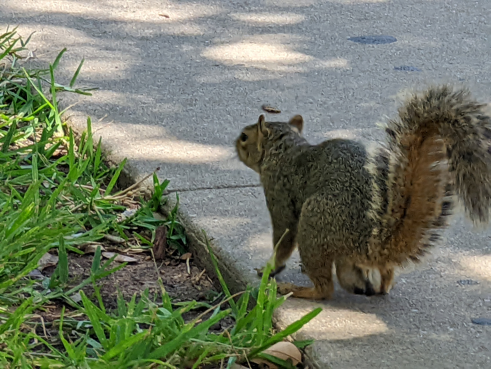
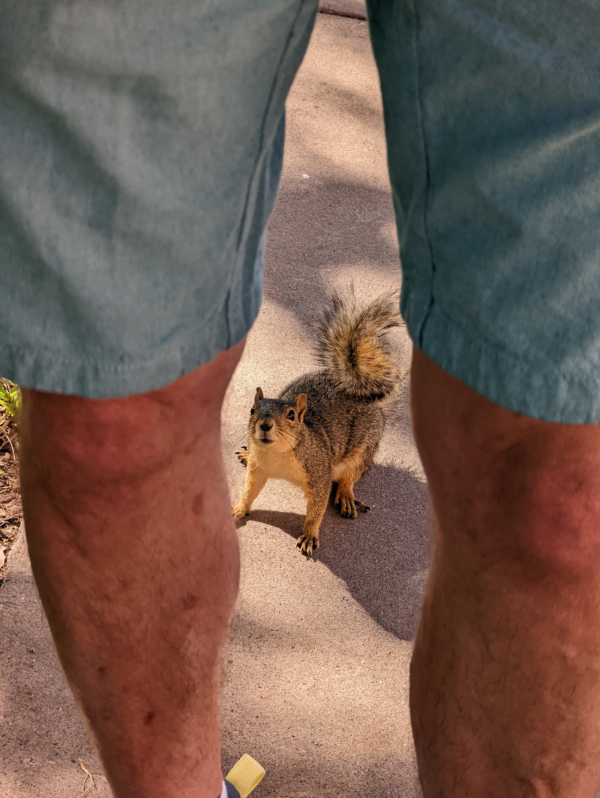

# The Quest for Generalization Oliver Zeigermann
### Who likes Squirrels?
### Can I neural network trained on images of the physical world make sense of a comic figure? Because: Kids can! <img src="data/squirrels/validation/335/emoji.png" style="height: 300px"> Kudos to Daan van Berkel for motivating the question https://twitter.com/DJCordhose/status/1508019125800652807
## This can certainly just be done with a standard architecture trained on standard dataset! * Contains the category 'fox_squirrel': http://image-net.org/ * Our architecture, ResNet: https://arxiv.org/abs/1603.05027 <!-- * Our architecture, Xception: https://arxiv.org/abs/1610.02357 --> <!-- * Model prebuilt and pretrained in Keras: https://keras.io/api/applications/xception/ --> * Model prebuilt and pretrained in Keras: https://keras.io/api/applications/resnet/#resnet50v2-function * The code: https://github.com/DJCordhose/ml-resources/blob/main/notebooks/image/generalization.ipynb
### Results: ResNet 50 V2 trained on ImageNet <div class="container"> <div class="col"> <img src="data/squirrels/validation/335/emoji.png" style="height:400px;"> </div> <div class="col"> <br> <br> <br> <h2 class="fragments"> 1. 'tree_frog': 68%, 1. 'tailed_frog': 8% 1. 'comic_book', 5% </h2> </div> </div>
# Results aren't great
# Approach: Fine tune on more images ## New ones taken this past weekend
<img src="data/squirrels/2022/austin-close.jpg">

<img src="data/squirrels/2022/austin-drinking.jpg">

### 10 Epochs, 10 Images, Learning Rate 0.00004, 15 secs on CPU
### Results: ResNet 50 V2 after retraining on the Austin Squirrel <div class="container"> <div class="col"> <img src="data/squirrels/validation/335/emoji.png" style="height:400px;"> </div> <div class="col"> <br> <br> <br> <h2 class="fragments"> 1. 'fox_squirrel': 35%, 1. 'tree_frog': 11% 1. 'muzzle', 6% </h2> </div> </div>
<img src="img/Alibi_Explain_Logo_rgb.png" style="height:400px;"> https://docs.seldon.io/projects/alibi/en/stable/methods/Anchors.html#Images
<img src="img/alibi-anchor-squirrel.png" style="height:400px;">
<img src="img/alibi-anchor-cat.png" style="height:400px;"> Egyptian_cat: 93%
# It is not flawless, though
## Recall: We still don't find enough squirrels <div class="container"> <div class="col"> </div> <div class="col"> <br> <h2 class="fragments"> 1. 'comic_book': 96%, 1. 'book_jacket': 1% 1. 'envelope', .1% </h2> </div> </div>
## Precision: And too many at the same time <div class="container"> <div class="col"> </div> <div class="col"> <br> <h2 class="fragments"> 1. 'fox_squirrel': 36%, 1. 'nipple': 16% 1. 'comic_book', 5% </h2> </div> </div>
## How about this? # DALL-E: A chubby green squirrel on the moon https://labs.openai.com/
<img src="data/squirrels/2022/DALL·E 2022-07-12 13.55.34 - A chubby green squirrel on the moon.png">
<img src="data/squirrels/2022/DALL·E 2022-07-12 13.59.26 - A chubby green squirrel on the moon.png">
# Thanks to me about ideas ## The Quest for Generalization Oliver Zeigermann <!-- https://www.linkedin.com/in/oliver-zeigermann-34989773/ oliver@zeigermann.de https://twitter.com/DJCordhose Slides: https://djcordhose.github.io/ml-resources/2022-scipy-generalization.html -->